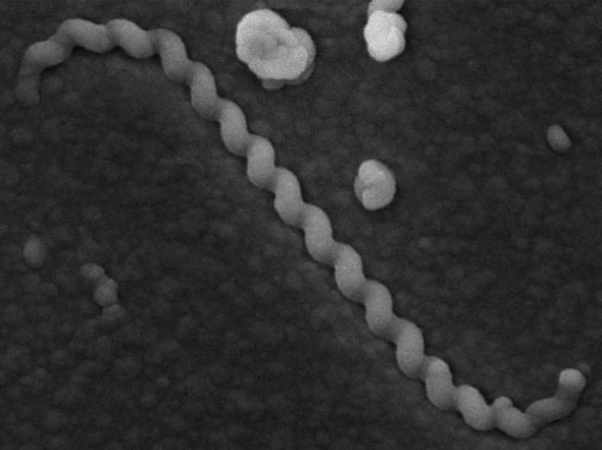

Project Leptospira
As this project is partially confidential, this section will focus on general information about Leptospira. The primary goal of this part of the portfolio is to demonstrate proper source citation skills.
Therefore, eight facts about Leptospira are presented below.
Eight Facts About Leptospira
- Leptospires are thin, helical, and extremely mobile (Ko, Goarant, and Picardeau 2009).

Figure 3: Dr. Priscyla Ribeiro and Dr. Claudio Figueira
There are both pathogenic and non-pathogenic species. Human and animal infections are caused by only eight pathogenic species: L. interrogans, L. kirschneri, L. noguchi, L. santarosai, L. mayottensis, L. borgpetersenii, L. alexanderi, and L. weilli.
Pathogenic species are the etiological agents of leptospirosis (National Center for Biotechnology Information 2024).
The genus Leptospira is currently subdivided into 68 recognized genomic species (Garcia-Lopez et al. 2024).
The average genome size of Leptospira is approximately 4,128,000 ± 221,345 base pairs.
The average GC content of Leptospira ranges from 37.06% to 47.70% (Wilkinson et al. 2021).
The estimated worldwide annual incidence of leptospirosis exceeds 1 million cases, including approximately 59,000 deaths (Centers for Disease Control and Prevention 2025).
Leptospira species are highly adaptable bacteria capable of surviving in both host organisms and environmental reservoirs such as water and soil.